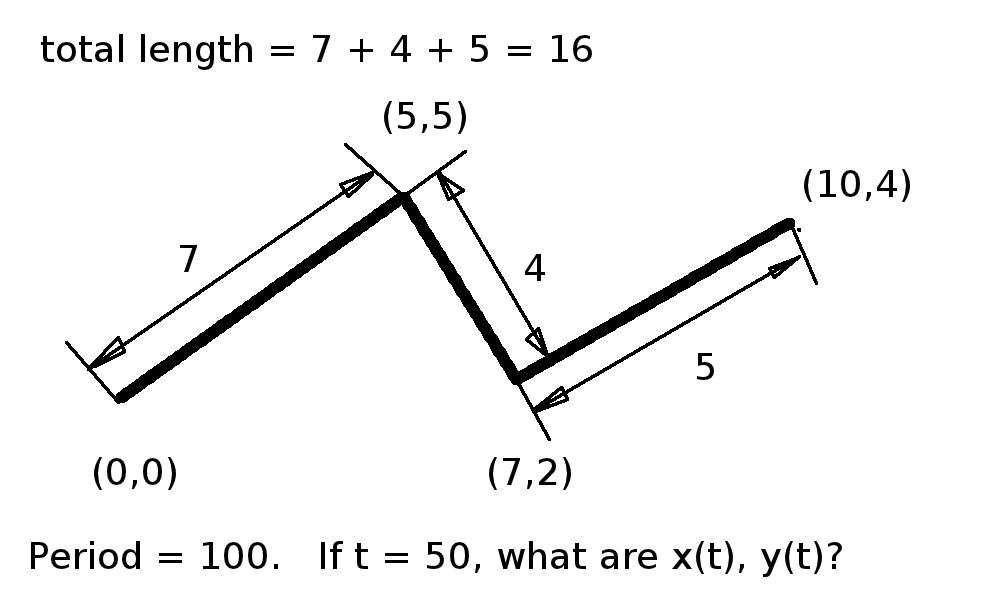

Playing Around With Guilloche Patterns
Up to now, the path our main wheel has taken has been a rectangle, produced by a custom written function.
We can generalize this to any ordered sequence of line segments to produce arbitrary paths.
the f(t), g(t) over the interval 0 < t < period cover all the line segments, then f(t) and g(t) simply have to compute where t/period falls in the sequence of lines. Compute the total length of all the line segments, add up each line segment from the beginning of the sequence until the length/total_length exceeds t/period, and then compute the offset into the current segment such that length/total_length = t/period, then find x and y offsets from the beginning of the current line segment by interpolation.

Well, 50/100 = 0.5
0.5 * 16 = 8.
The first segment is only 7, so we're a little bit into the 2nd segment.
How much into the second segment? (8 - 7) / 4 = 0.25.
x = 5 + 0.25 * (7 - 5) = 5.5
y = 5 + 0.25 * (2 - 5) = 4.25
see guilloche9.pde